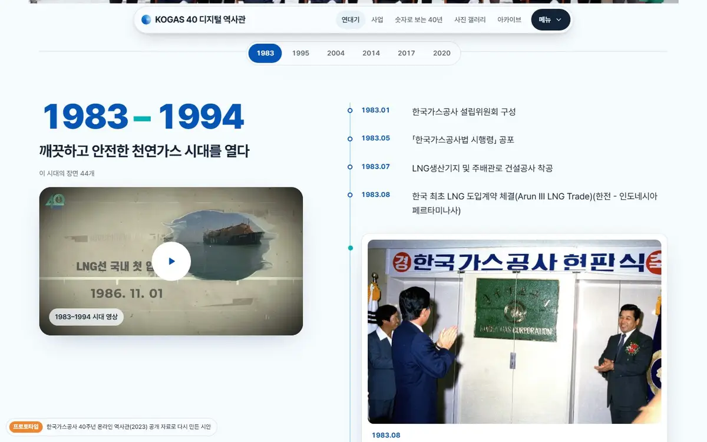

STEP 01
공개 자료 모으기
원본 사이트의 글·사진·영상·숫자를 구조째 모으고, 사진은 WebP로 줄여요.
P보람찬크루 · 프로토타입
고객이 아쉬워한 공개 사례를 같은 공개 자료로 다시 만들어, 보람찬크루의 제작 기준과 완성도를 보여 줍니다. 모든 프로토타입은 실제 서비스가 아닌 시안으로 표시합니다.
모든 프로토타입은 같은 네 단계를 거쳐요.
STEP 01
원본 사이트의 글·사진·영상·숫자를 구조째 모으고, 사진은 WebP로 줄여요.
STEP 02
연대기·사업·숫자·갤러리·아카이브, 2단계 이내 구조로 다시 나눠요.
STEP 03
밝은 톤, 시그니처 움직임 하나, 마이크로 인터랙션, 가벼운 영상.
STEP 04
컨벤션 자동 검사, 다섯 화면 폭 넘침 검사, 실제 브라우저 프레임 측정.
NOTE
프로토타입은 실제 서비스가 아니라서 검색에 걸리지 않게 했어요(noindex).
NOTE
원본 글·사진·영상의 저작권은 각 기관에 있어요. 기관 로고는 쓰지 않아요.
하나씩 끝까지 만들고 다음으로 넘어가요.

PROTOTYPE 02 · 준비 중
PROTOTYPE 03 · 준비 중